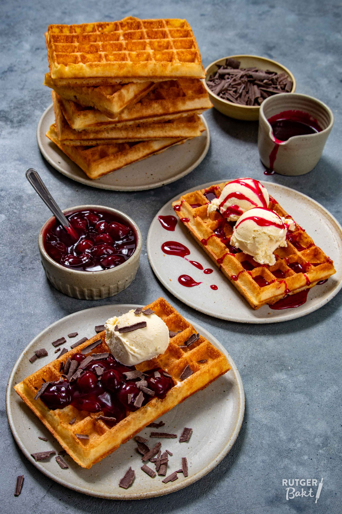

Belgische Wafels
De authentieke Belgische wafel is een heerlijk luchtig gebak met een krokante buitenkant. Perfect voor ontbijt, dessert of als tussendoortje met verschillende toppings.

Ingrediënten (8 wafels)
- 375g bloem
- 21g verse gist
- 300ml lauwe melk
- 2 eieren
- 150g gesmolten boter
- 75g suiker
- 1 zakje vanillesuiker
- Snufje zout
- Parelsuiker (optioneel)
Bereidingswijze
- Los de gist op in de lauwe melk en laat 10 minuten staan.
- Meng bloem, suiker, vanillesuiker en zout in een grote kom.
- Voeg de eieren en het gist-melkmengsel toe.
- Meng tot een glad beslag en voeg de gesmolten boter toe.
- Laat het beslag 1 uur rijzen op een warme plek.
- Verwarm het wafelijzer.
- Schep beslag in het wafelijzer en bak goudbruin.
- Serveer warm met toppings naar keuze.
Tips
- Serveer met poedersuiker, slagroom of vers fruit.
- Het beslag kan een nacht in de koelkast bewaard worden.
- Zorg dat het wafelijzer goed heet is voor het beste resultaat.